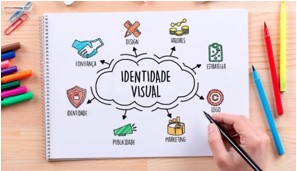
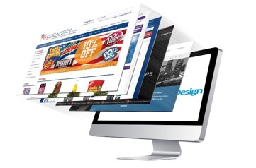
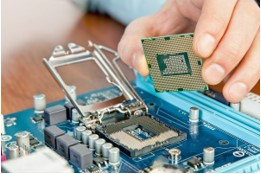

O que eu faço?

- Identidade Visual
- Layout para Sites
- Site corporativos
- Lojas virtuais
- Manutenção em Computadores
- Aplicativos
Identidade Visual
A elaboração de uma identidade visual é advinda de algumas técnicas específicas e com embasamento, sendo elas: o nome da marca, cores, logotipo, tipografia, vetores, desenhos, formatos, slogan, efeitos visuais, entre outros.
Layout para Sites
São os cuidados com o layout que possibilitam ordenar textos, imagens, vídeos e outros componentes das páginas da web. Tudo de maneira a promover a harmonia e qualificar a visualização pelo usuário.
Site corporativos
Em um site corporativo, seu público terá acesso a informações completas e relevantes sobre a sua empresa, que só estão ali a partir de uma veiculação com dados cadastrais verdadeiros (pessoa física/jurídica).
Lojas virtuais
Loja virtual designa uma página na Internet que utiliza software de gerenciamento de pedidos (carrinho de compras ou cesto de compras), na qual empresas oferecem e vendem seus serviços ou produtos. Os clientes acessam o site, escolhem os artigos para aquisição e recebem estes produtos em casa.
Manutenção em Computadores
"A manutenção relacionada a computadores é a ação, ou conjunto de ações, desencadeada visando solucionar um problema diagnosticado no computador, ou antever o problema por meio de análise de situações no funcionamento do computador, relacionado a software e/ou hardware.
Aplicativos
Aplicativos são programas de software presentes em celulares Android, iPhone (iOS), e em outros diversos dispositivos inteligentes, como smart TVs. Os apps podem ser gratuitos ou pagos e desempenham diversas funções: mensageiros online, streaming, gerenciadores, editores de fotos e vídeos etc.
Como conquista clientes na era digital?
O primeiro passo para fidelizar clientes na era digital é conhecer bem quem é o seu consumidor. Por exemplo, se ele pertence à geração Y ou millennial (nascidos a partir da década de 1980). Para promover a fidelização de clientes e compreender se eles têm uma ótima experiência é fundamental aplicar pesquisas de satisfação de forma constante. Afinal, ela é a principal ferramenta para coletar feedbacks valiosos e que podem ajudar a criar um planejamento de mídia mais eficaz.
Últimas notícias
-

Gama Academy é a melhor startup de educação do país.
Em documentos utilizados para testes, este tipo de texto é utilizado para evitar que as pessoas foquem a atenção no texto e se concentrem nos aspectos visuais. Leia mais
-
Gama Academy transforma vidas criando persperctivas de futuro.
Em documentos utilizados para testes, este tipo de texto é utilizado para evitar que as pessoas foquem a atenção no texto e se concentrem nos aspectos visuais. Leia mais
-
Gama Academy tem transformado o mercado digital com educação prática
Em documentos utilizados para testes, este tipo de texto é utilizado para evitar que as pessoas foquem a atenção no texto e se concentrem nos aspectos visuais. Leia mais